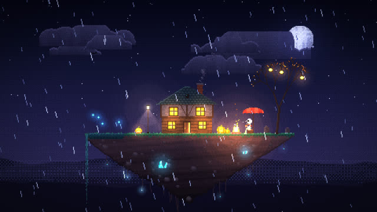
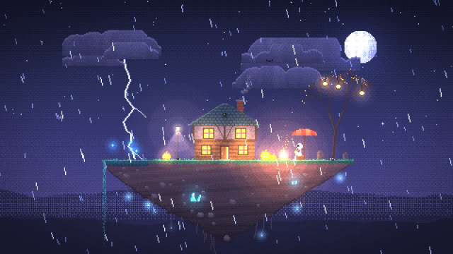
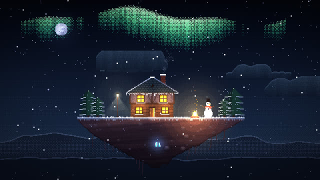
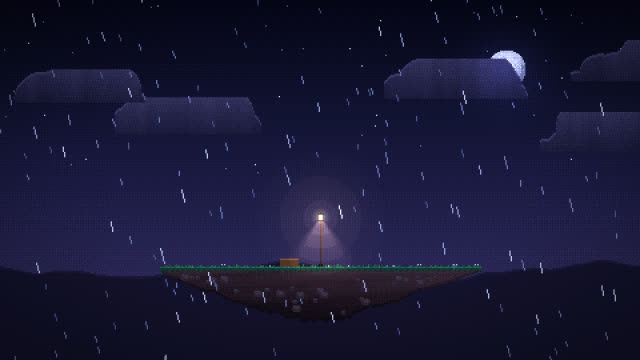

작업 흐름
- 입력
- 장면 설명이나 프롬프트(장소, 인물 하나, 날씨, 따뜻한 불빛과 차가운 밤), 참고 이미지나 영상
- 장면
- 480×270 캔버스에 정수 좌표로만 그리는 HTML 한 장. 하늘부터 앞쪽 날씨까지 소품 키트를 쌓고, 빛은 후처리 한 번
- 확인
- 단계별 스틸(
?pass=base·?pass=light), 루프 전체 콘택트 시트, 첫 프레임과 마지막 프레임을 비교하는 루프 검사 - 출력
- 최근접 확대로 선명한 1920×1080 MP4 한 바퀴(×8이면 4K), 재인코딩 없이 이어 붙인 10시간 영상, 음악 트랙 선택
cd pixel-diorama/examples/halloween-rain
node ../../scripts/render.mjs index.html --sheet 8
node ../../scripts/loop-check.mjs index.html
node ../../scripts/render.mjs index.html
node ../../scripts/extend.mjs out/halloween-rain.mp4 --hours 10요구 사항: Node + Playwright Chromium, ffmpeg. GPU와 네트워크가 필요 없고, 60초 루프 한 바퀴를 CPU로 2분 안팎에 렌더합니다. 단계별 순서는 SKILL.md에 있습니다.
샘플
예제 두 편과 시작 템플릿, 그리고 한 프레임이 빛 후처리를 지나는 모습입니다. 카드를 누르면 새 탭에서 그 장면이 그 순간에 멈춘 채 열리고, 브라우저가 직접 그립니다.
장면 16:9 · 루프
같은 엔진과 소품 키트로 만든 장면입니다. 소품 배치와 팔레트, 날씨만 다릅니다.

예제 · 60초 루프Halloween Rainexamples/halloween-rain
X에 공유된 프롬프트를 옮긴 장면. 차가운 비와 모닥불 · 창문 · 랜턴 · 호박등의 따뜻한 빛

예제 · 17.25초번개 치는 순간
한 루프에 두 번. 깜박이는 두 번의 빛과 감쇠, 언덕 뒤에 그린 번개 줄기

예제 · 40초 루프First Snowexamples/first-snow
같은 키트의 겨울. 루프마다 한 번 굽이치는 오로라, 두 겹의 눈, 눈 쌓인 지붕과 전나무

템플릿 · 30초 루프시작 장면templates/scene.html
new-scene.mjs가 복사하는 출발점. 하늘, 섬, 가로등, 직접 그린 벤치, 비 두 겹빛 단계 같은 프레임 · 3초
장면은 차갑고 어둡게 칠하고, 따뜻함은 후처리의 빛으로만 더합니다.
실제 작품
이 레포에서 만든 스킬입니다. X에 공유된 프롬프트(TypeScript만으로 만든 로파이 영상용 할로윈 픽셀아트 디오라마)를 옮긴 예제 「Halloween Rain」이 처음 만든 작품이고, 장면과 소품은 모두 이 레포의 코드입니다.
링크
- SKILL.md 워크플로
- 폴더 lib · scripts · templates · references · examples
- README.md 빠른 시작
- references/LOOK.md 따뜻함과 차가움, 팔레트, 빛 수치, 움직임 예산
- references/KIT.md 엔진과 소품 API, 새 소품 만들기
- references/LESSONS.md 겪은 문제와 해결